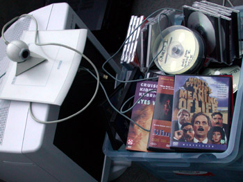

Still moving
woensdag 16 april 2003 | Persoonlijk
In verhuizen kruipt heel wat meer werk dan ik ooit had gedacht. Een leven met één voet in het ouderlijke huis en de andere elders, bezorgt een mens bovendien een hoop heen-en-weer gesleur. Maar morgen komt de Telenet-man naar ons nieuwe huisje: vanaf dan zal alles in een ongeziene stroomversnelling terechtkomen, vermoed ik ;-)

Tompie op 17 april 2003
Haha, was het niet huisje, tuintje, telenetje?